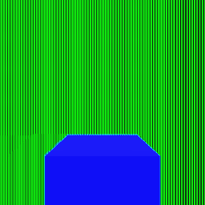
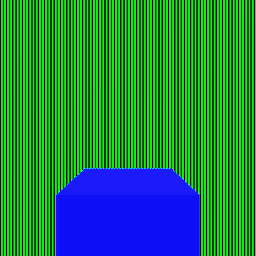
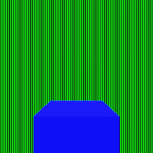
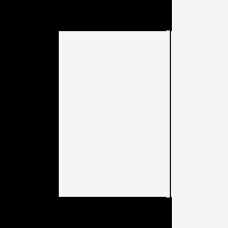

Rendering regression validation¶
These synthetic scenes isolate temporal detail and opening-edge rejection. They are renderer regressions, not a claim of photographic scene quality. The images come from the native renderer.
Fast camera¶
A tracked subject travels with the camera while a striped roadside wall crosses the screen at more than 32 pixels per frame. The camera stays below the global camera-cut threshold. The reference uses the same final view and jitter phase without accumulated history.
| Previous resolve | Updated resolve | Fresh reference |
|---|---|---|
 |
 |
 |
The mean sum of absolute RGB byte differences per pixel in the wall region was 41.1073 with the previous shader. The updated resolve meets the regression threshold of 0.5, with both zero and four MSAA samples. Temporal antialiasing disabled produces the same final pixels as a fresh view. Existing static and slowly moving foliage tests still pass.
Opening edge¶
A foreground card moves about 7.7 pixels while its background moves about 1.6 pixels. Both remain below the fast-motion threshold. The regression selects 51 freshly revealed black pixels next to the card. Their mean sum of absolute RGB byte errors falls from 588 to zero.
| Previous resolve | Updated resolve |
|---|---|
 |
The previous shader fails both regressions. These original controls isolate current motion and neighbor disagreement; the additional depth validation below covers surfaces that disappear without leaving a motion discontinuity. Fine moving detail can still trade smear for shimmer.
Particle shadows and water refactoring¶
Particle render tests distinguish receiver darkening from the visible sprite, compare circular and rectangular silhouettes, check transparent flipbook cells and lifetime alpha, clear expired casters, and require identical disabled frames before and after an enabled frame.
The water shader is divided into small helpers for intersection, reflection, lighting, transmission, foam and composition. Each function body is at most 13 lines. All 28 water regression images remain pixel-identical across this refactoring. Across existing non-temporal scenes, 83 shared screenshots remain pixel-identical to the earlier renderer.
Validation environment¶
On a GeForce RTX 4050 Laptop GPU, the combined change passed 1,193 C++ unit/integration cases (41,877 assertions), 23 Ruby suites and 52 render cases (655,490 assertions). Include-direction checks pass. The lit, depth, motion, particle-shadow and temporal programs also compile and link as GLSL ES 3.00 through native Mesa Intel EGL. This is not Android-device validation.
With 60 warm-up frames and 600 measured frames at 1600 x 900, without vertical synchronization, the scatter field measured 3.107 ms average / 3.106 ms median and the local showcase scene 5.091 ms average / 5.075 ms median. These are measurements of this run, not a controlled claim of speedup over another revision. Showcase assets are local and are not included here.
Previous-frame depth validation¶
The temporal history stores logarithmic view distance in its existing alpha channel. The motion pass stores the expected previous view distance alongside its velocity, using the previous object and bone transforms. Color history is read where the surface was, without either frame's Halton shift: the history is the average over every shift, so a still view holds still. Only the depth lookup accounts for the current and previous shifts, because each stored depth is the previous frame's jittered sample. The pixel's own previous depth is looked for where its own motion takes it, even where its color follows the nearest surface's motion at an edge. Depth is checked over that texel and its eight neighbors, each with a slope margin for its own distance: one match keeps the history (the previous sample may have landed one texel over at a silhouette, against the sky or another surface), none rejects it. Where only some match (a depth edge), the filtered color is kept within the four nearest texels' colors, so the spline's outer taps add no color from across the edge. Where the pixel's own texel held another surface and the surfaces around it separate slowly (under two pixels a frame), the color is instead held to the colors of the matching texels: an object moving away leaves no ghost. An uninitialized frame cannot accumulate history; its output still initializes depth for the next frame. Sky (any depth below half the near plane's) and points behind the previous camera have distinct markers. Deliberately stochastic coverage (distance fades and dithered transparency) has signed depth metadata, allowing covered samples and sky holes to accumulate. An opaque center pixel still requires its own depth match; a neighboring stochastic surface cannot make unrelated opaque history valid.
Logarithmic distance avoids overflowing half-float channels for distant geometry. A bounded comparison margin allows half-float rounding and the depth change across a subpixel footprint; it cannot grow without limit at a silhouette. The existing targets and render passes are reused. The first temporal frame now also draws the motion pass so its depth history starts initialized.
Isolated resolve tests distinguish depth rejection from color clipping and velocity rejection. They cover zero-motion disocclusion, expected previous depth, invalid history, sky, jittered depth edges, colors beside a depth edge, a slow object moving away, a pixel whose neighbor moves differently, a sloped surface, a near plane of one millimeter and distant values. Scene regressions additionally exercise a stopped foreground object that disappears and approaching rigid and skinned geometry, with zero and four MSAA samples. The approaching surfaces use dithered coverage so discarding all history cannot pass as a fix. A still, turned cube in front of the sky and of a wall checks that the settled picture changes by less than 0.7 bytes per cube pixel from frame to frame (about 6 when the color lookup followed the jitter, about 1 when history was rejected at every silhouette) and that its silhouette gains partly covered pixels over a single sample.
The opaque-neighbor control selects 51 newly revealed black edge pixels beside a surviving white surface. With four MSAA samples, the previous renderer retains a mean sum of absolute RGB byte errors of 732; depth validation reduces that selected-edge error to zero. This does not claim that every pixel in an accumulated frame matches a fresh frame. Both renderers produce pixel-identical fresh reference pictures.
| Previous history | Previous-depth validation |
|---|---|
The crops cover [124, 100, 138, 156] in the original 256 by 256 picture and are enlarged eight times with nearest-neighbor sampling. The previous result retains a bright column from the removed opaque card. The corrected edge agrees with the freshly rendered background.
The combined render suite passes 97 cases and 655778 assertions; the full unit suite passes 1215 cases and 42068 assertions. The thirteen new depth/scene cases also pass on llvmpipe. The previous renderer fails eight of ten isolated depth cases and both disappearing-object scene cases (six failed assertions). The approaching rigid/skinned scene remains a positive history-preservation control. Five native GLES shader pairs compile and link; this does not replace Android packaging.
A render-only ABBA comparison uses temporal anti-aliasing in both versions, a fixed 0.5-second animation clock, 1600 by 900 pixels, 60 warmup frames and 600 measured frames. The baseline uses the same twelve-wave water detail as the candidate. Physical interaction detection and game logic are excluded.
| Scene | Previous medians (ms) | Depth-validation medians (ms) | Pair averages (ms) |
|---|---|---|---|
| Scatter field | 3.913, 3.846 | 3.876, 3.844 | 3.880 to 3.860 |
| Coastal water | 12.573, 12.664 | 12.659, 12.675 | 12.619 to 12.667 |
These small differences are comparable to repeat variation; they do not establish a speedup or a precise overhead. The added motion pass on the first temporal frame is outside the warmed measurement. No additional history texture or steady-state render pass is allocated.